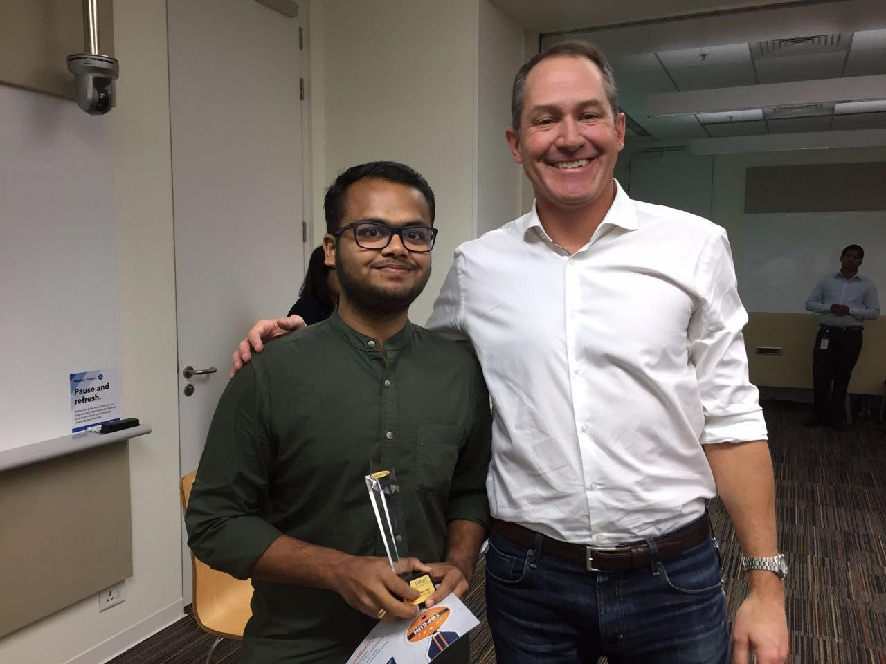
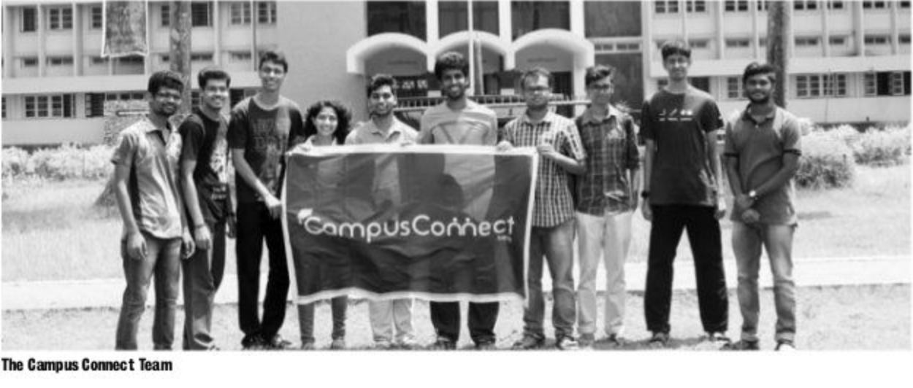
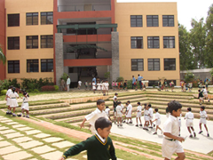
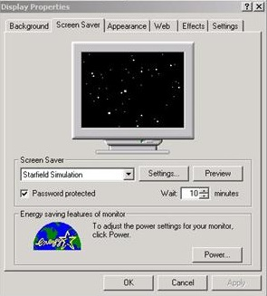

Moved to Los Angeles
Joined UCLA for my Master's in Computer Science. Excited!
September 2018Awarded 'TopGun'
I ws given the title of Topgun, a quarterly award given to <5 from among 700+ engineers at Intuit India. I won this in the category 'Learn Fast'. Below is me receiving the award from Intuit's Executive Vice President Lucase Watson. 
March 2017Started Working at Intuit Full Time
Joined Intuit's Platform & Tools Engineering as a Software Engineer. Worked on multiple projects over 2 years(2016-18) here, found great mentors and built friendships for a lifetime.
August 2016CampusConnect Launches
CampusConnect was founded to be a single platform for effective campus communication. I led the development efforts across the tech-stack consisting of an Android client powered by Google's App Engine. After 8+ months of development we launched the mobile app in time for NITK's Global Alumni Convention. We received 5000+ downloads on the Google play store and Rs.300,000 in pre-seed funding by NITK Startup Incubator. Unparalled learning on building market ready products. Press Coverage 
December 2015Started Internship at Intuit
Was an intern in the Quickbooks Online-Reports team at Intuit. Worked on building custom reports using JAVA APIs for Microsoft Excel. This being one of my first corporate experiences, I thoroughly enjoyed it.
May-July 2015Elected to Student's Council
In my final year of Undergraduate studies at NITK, I was elected to the NITK Students council as the Class Representative of my B.Tech class of 103 students. Was my first leadership position and was indeed great learning experience.
April 2015Starts Undergrad at NITK
Started at NITK, Surathkal for my Engineering. Did my Bachelors in Information Technology. Arguably, few of the best years of my life. Made friends for life, learned loads and had tons of fun.
2012First Phone
I got my first mobile phone after grade 10. It was the Nokia 5233 powered by the Symbian OS. Even resistive touch phones were a rage back then!
2010Moves to Bangalore
In grade 6, I moved to Bangalore to study at Delhi Public School, Bangalore North.
Really enjoyed my time here and learned loads!

The PC Comes home
My father brings home the Microsoft PC for his accounting needs. I was really amazed by the PC and used to just sit gazing at the Stars Screensaver
.  1999Starts school
I started school at Gulbarga
1997